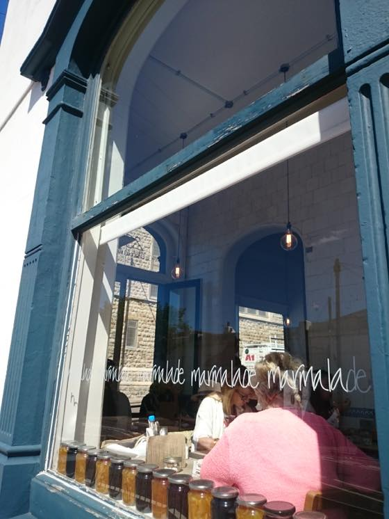

사진은 8월에 댕겨온 브라이튼 Cafe Marmalade :)
브라이튼 놀러가실 분들 여기 추천합니다. 센터에서 촘 떨어져 있긴한데 커피도 맛나고 샌드위치 등 식사류도 훌륭합니다. :)
------
8월부터 오늘까지 방문한 레스토랑 기록. BAD LUCK 확률이 높았음.
한식 레스토랑 in 브라이튼
8월에 브라이튼 댕겨왔는데. 4-5년전 방문했을때 들린 한식당이 느므 맘에들어서 이번에 또 다녀왔다.
처음 가게된건 칭구가 브라이튼 살때 데려가줌. 코스요리가 메인, 반찬 할거없이 정갈하고 훌륭했었다. 후식으로 주는 식혜랑 수정과도 좋았고 주인분도 매우 친절했던 걸로 기억. 그리고 난 육회를 여기서 첨 먹어봄 ㅋㅋㅋㅋ 코스요리에 육회가 작은접시로 포함되어있었는데. 살얼음에 슬라이스된 배 까지 무척 맛났었다. 그다음 영쿡친구랑 브라이튼 방문했을때는 내추천으로 데려감. 그 친구도 요리 넘 맛나다며 매우 좋아했던 기억이 있는 곳이었음.
해서 오랜만에 방문해서 코스요리 먹자 싶어서 저녁타임에 들렸는데 주인이 바뀐건지. 가게 내부는 그대로인데 나온 음식이 정말 황당했다 -_-;;
영쿡서 한식당을 운영해도 아예 현지화 된 레스토랑이 아니면 기본 반찬이 꽤 괜찮게 나오거나 최소 김치라도 주는 편인데 반찬도 너무 황당했음;;; 양이 많고 적고 이런게 아니라 걍 보기에도 성의없음 / 만들의지 없음의 포스를 팍팍 풍기는 김치 두종류;;;; 게다가 그릇에 담아온것도 느므 지저분해;;;
메인으로 나온 요리도 한눈에 보기에도 야.....재료 너무 아꼈다;;; 싶은 요리였다;; 김밥천국 포스 풍기는 플라스틱 식기에 한눈에 봐도 턱없이 적어보이는 밥이랑 메인요리;;;; 게다가 가격도 너무 비싸;;; 퀄리티에 비해서도 비싸고 평균 한식당 가격으로 보기에도 비싸다;;;
김밥천국 퀄리티에 성의없음 까지 더해진 요리를 각 £9-10 내고 먹고 나오려니 속이 쓰렸음 ㅡㅡ;;;;;
런던에서도 내가 좋아했던 이탈리안 레스토랑이 메뉴가 대대적으로 바뀌고 퀄리티가 급 하락한 곳이 있었는데
그때랑 비슷하다;; 좋아했던 장소가 변한걸 보니 기분이 씁슬했음;;
이탈리안 in 킹스크로스
갑자기 (내가 요리한거 말고 ㅋㅋ) 제대로된 파스타가 먹고싶다!! 라고 생각해서 킹스크로스에 있는 이탈리안 레스토랑 방문.
걍 흔하게 볼수있는 체인이구 전에도 가끔 파스타 생각나면 혼자가서 먹고 하는 곳인데
이날 주문한 까르보나라는 진심 아무맛도 느낄수 없었음;;;;;; 밍밍해;; 너무 밍밍해;; 이집 미트볼 스파게티도 좋아하고 크림소스도 좋아했는데 이날은 뭔일이야 싶을정도로 아무맛이 안느껴짐 ㅡㅡ;;;
이탈리안 in 유스턴
해서 ㅋㅋㅋㅋㅋㅋ 뭔가 집착이 시작되었고;; 내 기필코 제대로된 이탈리안을 먹으리라 - 라는 생각에 유스턴에 있는 처음 보는 레스토랑에 들어감. 해산물 거하게 들어간 씨푸드 파스타 랑 콜라 주문. 콜라가 테이블에 놓여지고 마시려고 유리잔을 들어올리는 순간 황당하게도 유리잔 밑둥이 쑥 빠졌다. ㅋㅋㅋㅋㅋ 아니 어떻게 하면 잔이 이런식으로 분리가 되는거지? 내 바지 & 옆의자에 걸쳐놓은 자켓 콜라로 다 젖고 -_-;;; 난 그대로 얼음이 되어서 손에 밑둥이 빠진 깨진 컵을 들고 어버버 거리고 있는데 직원중 한명이 굉장히 빠른속도로 달려와서 나보고 우선 안으로 들어가자고 함. (야외 테이블에 앉아있었음) 읭?읭??? 이러고 있으니 내손을 가리키는데 엄지손가락이 유리에 베여서 피를 뚝뚝 흘리고 있었다 ㅋㅋㅋㅋㅋㅋㅋㅋㅋ 콜라랑 유리파편이 생각보다 심하게 튀어서 내 뒤에 테이블에서 식사를 하던 가족에게도 조금 튀었는듯. 레스토랑 안으로 들어가니 자기네들끼리 이탈리아어로 무서운 속도로 뭐라뭐라 말하고 구급상자 꺼내서 소독하고 밴드 붙여줌. 이게 어떻게 베인건지 모르겠는데 피가 생각보다 많이 남;; 그 구급상자 기다리는 순간에도 계속 오.....피다.....내피를 오랜만에 본다 - 뭐 이런생각을 하면서 바닥에 계속 방울방울 떨어지는 피 구경을 하고있었음 ㅋㅋ
소독하고 밴드붙이고 여분으로 밴드하나 더 받고 그대로 바(BAR)에 앉아서 파스타를 먹는데;; 이것도 그냥저냥 이었음 ㅡㅡ;; 나쁘진 않지만 그렇다고 맛있다고 하기에도 애매한정도;; 차라리 음식이 엄청 맛났으면 기분이라도 좀 나아졌을텐데 것도 아님;;
플러스 다먹고 계산하는데 이사람들 서비스차지 12.5% 다 받더라 ㅡㅡ;; 레스토랑에 따라 서비스차지가 계산서에 미리 포함되어 있는곳이 있고 내가 팁을 두고 나오는 곳이 있는데 여기는 미리 포함되어 있었음;; 계산서 가져오면 커다랗게 0 을 그려주고 팁은 주지 말아야지 - 라고 마음먹고 있었건만 ㅡㅡ;;; 칼같이 다 계산하고 나옴;;; 아니 세탁비는 안주더라도 서비스차지는 받지 말아야지;;; 약 20파운드내고 밥먹고 나오는데 기분 꽁기꽁기했음 -_-;;
결국 전자렌지 돌려먹는 파스타 사와서 이틀연속 집에서 해치움 ㅋㅋㅋㅋ 젠장 이게 더 맛있었어 ㅜㅜ
대따 맛난 이탈리안 레스토랑을 가고싶습니다 흑흑
스페인 타파스 in MKC
그리고 일욜날 생일파티로 스페인 레스토랑에서 7명이 모임
여기도 좋아하는 체인으로 가끔 들리는데 이날은 서버가 문제였음
일이 아직 익숙하지 않은지 우리 일행중 C군의 주문만 계속 까먹고 안가져옴 ㅋㅋㅋ
스타터 시킨걸 메인 거진 다 먹어갈때 가져온다던가 다들 음료 추가로 주문했는데 C군것만 빼놓고 가져온다던가 해서 막판에는 주문 물리고 계산서에서 제해달라고 말함. 10월중순까지 타파스 2for1 프로모션 한다고 포스터를 붙여놨는데 계산서에는 할인적용이 안되있는 거임. 다들 계산서 받아보고 읭? 어째서지? 이러고 우물쭈물하는 사이 생일 주인공이 계산을 마침. 레스토랑을 나와 각자 집으로 돌아가려는 찰나 C군이 함 물어보기나 하자 해서 계산서를 들고 다시 레스토랑안으로 들어감. 결론은 이것도 레스토랑측 실수. 해서 약 42파운드 가량을 세이브 할수 있었다. 장하다 C군!! 훌륭하다 C군!! 근데 여기 매니저 조차 웃겼던게 ㅋㅋㅋㅋ 결재 취소하고 다시 (할인된 가격으로) 계산해주면서 다음부터는 주문하기전에 미리 말하란다 ㅋㅋㅋㅋㅋㅋㅋㅋㅋㅋㅋㅋㅋ 우리 매니저에게 혼났음 ㅋㅋㅋㅋㅋㅋ 다들 벙쪄서 아니 미친 머라는거야 ㅋㅋㅋ 지금 이게 우리들 잘못임? ㅋㅋㅋㅋ 그게 왜 우리 일이야 니네 일이지 라고 투덜거리면서 밖으로 나옴. 자주 하는 말이지만 영혼없이 "쏘리" 한번 하면 될걸 이렇게 곧죽어도 남탓하는 캐릭터를 가끔 마주치는데 참으로 깝깝시렵다;;
맛나게 먹고 기분좋게 나올수 있는 레스토랑을 가고싶습니당 ;ㅂ;
뽑기 연속적으로 꽝 이 걸린 느낌 ^^;;;